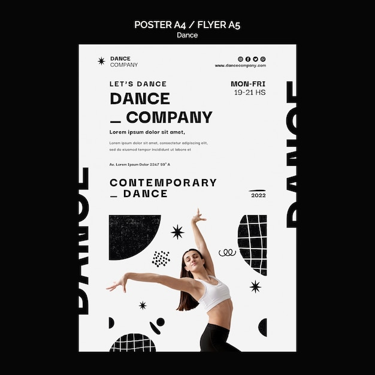

The cost of instant plausibility
Generated text often arrives looking complete before it has earned the right to be trusted. Design can either hide that problem or put it under a bright lamp.
Open journalA full static editorial site about craft, authorship, and the messy line between human judgment and synthetic output. Built like a blog, staged like a magazine, and filled with text-heavy visuals.


Landing, manifesto, journal, gallery, and about page, all plain HTML.
JPG and WEBP poster images stored inside the local `assets/images` folder.
Direct image links also render headlines and labels inside the image itself.
This site treats automation as a force that should be examined, not worshipped. Every section asks a simple question: can readers still tell where thought happened?


Generated text often arrives looking complete before it has earned the right to be trusted. Design can either hide that problem or put it under a bright lamp.
Open journalThat is the central rule of this site. The visuals stay dramatic, but the logic stays readable.